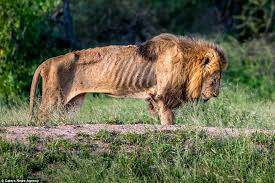

Enviornmental Effects
| Global Warming- As the climate changes, big cats will need to adjust to changes in their habitat. Snow leopards are especially vulnerable to global warming as increasing temperatures melt snow at higher altitudes, as these animals follow the snow higher, the amount of prey shrinks." This connects back to their Loss of Habitat and Loss of Prey, so this all ties in to affecting the Earth. | 
|
|---|---|
| Loss of Prey with Human Conflict- According to seethewild.org, "As the human populations grows,hunting of the main prey of cat increases. These big animals require a large amount of food to survive and as their prey declines, they need to go farther to hunt or become likely to hunt livestock." So we as humans need to stop killing all these animals because then they will eat our food sources.Also, we need to stop killing any other animals or soon like I said before many wild animals will attack our produce. |  |